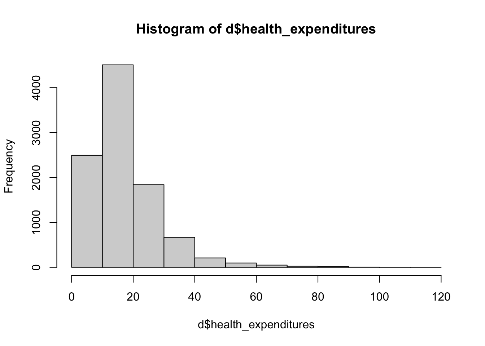
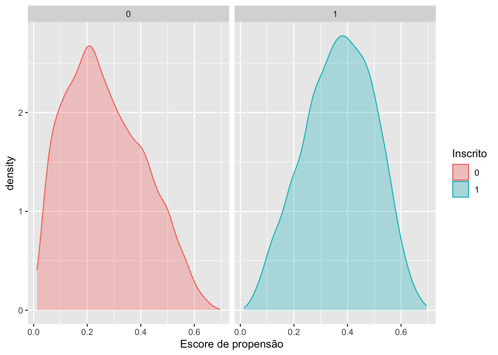

library(haven)
library(tidyverse)Exercício 5 — Avaliando o HISP com propensity score
Entrega original: 29/11/2024.
1 Avaliando HISP com propensity scores
1.1 Passo-a-passo
No contexto desse trabalho, o Propensity Score é utilizado para estimar o efeito causal do tratamento (programa de subsídio) nos gastos com saúde.
2 Bibliotecas
Primeiro, carrega as bibliotecas que utilizaremos
2.1 Carregando e Analisando os Dados
O próximo passo é carregar os dados e realizar uma análise exploratória básica.
# Carregar o banco de dados
d <- read_dta(file = '../dados/evaluation.dta')
# O banco tem duas rodadas: linha de base (round = 0, antes do programa)
# e acompanhamento (round = 1, depois). O efeito do programa deve ser medido
# no resultado DEPOIS da inscrição, então usamos apenas a rodada de acompanhamento.
d <- d[d$round == 1, ]| Nome da Variável (Inglês) | Descrição (Português) |
|---|---|
| locality_identifier | Identificador da localidade |
| household_identifier | Identificador único do domicílio |
| treatment_locality | Domicílio está localizado em comunidade de tratamento (0=não, 1=sim) |
| promotion_locality | Domicílio está localizado em comunidade promovida (0=não, 1=sim) |
| eligible | Domicílio elegível para se inscrever no HISP (0=não, 1=sim) |
| enrolled | Domicílio inscrito no HISP (0=não, 1=sim) |
| enrolled_rp | Domicílio inscrito no HISP sob o cenário de promoção aleatória (0=não, 1=sim) |
| poverty_index | Índice de Pobreza 1-100 |
| round | Rodada da pesquisa (0 = linha de base; 1 = acompanhamento) |
| health_expenditures | Despesas de saúde do próprio bolso (por pessoa por ano) |
| age_hh | Idade do chefe do domicílio (em anos) |
| age_sp | Idade do cônjuge (em anos) |
| educ_hh | Educação do chefe do domicílio (anos completos de escolaridade) |
| educ_sp | Educação do cônjuge (anos completos de escolaridade) |
| female_hh | Chefe do domicílio é mulher (0=não, 1=sim) |
| indigenous | Chefe do domicílio fala uma língua indígena (0=não, 1=sim) |
| hhsize | Número de membros do domicílio (linha de base) |
| dirtfloor | Casa tem piso de terra na linha de base (0=não, 1=sim) |
| bathroom | Casa com banheiro privado na linha de base (0=não, 1=sim) |
| land | Número de hectares de terra possuídos pelo domicílio na linha de base |
| hospital_distance | Distância até o hospital mais próximo |
| hospital | Membro do domicílio visitou hospital no ano passado (0=não, 1=sim) |
# Visualizar as primeiras linhas e dimensões
dim(d)[1] 9914 22# Analisando a variável outcome (gastos em saúde)
# Distribuição
hist(d$health_expenditures)
# Média simples dos gastos em saúde
mean(d$health_expenditures)[1] 16.85922# Diferença de médias entre inscritos e não inscritos
mean(d$health_expenditures[d$enrolled == 1]) - mean(d$health_expenditures[d$enrolled == 0])[1] -12.86728d %>%
group_by(enrolled) %>%
summarise(n_pessoas = n(),
mean_health = mean(health_expenditures),
std_error = sd(health_expenditures) / sqrt(n_pessoas))2.2 Testes Estatísticos
A seguir, realizamos testes estatísticos para verificar se a diferença de médias é estatisticamente significativa.
with(d, t.test(health_expenditures~enrolled==1))
Welch Two Sample t-test
data: health_expenditures by enrolled == 1
t = 64.715, df = 7688.4, p-value < 2.2e-16
alternative hypothesis: true difference in means between group FALSE and group TRUE is not equal to 0
95 percent confidence interval:
12.47752 13.25704
sample estimates:
mean in group FALSE mean in group TRUE
20.707460 7.840179 3 Questão 1 - Explique o resultado do teste t
3.1 Resposta:
3.2 Estratégia de escore de propensão
3.2.1 Passo 1: Calcular os Escores de Propensão
prop <- glm(enrolled ~ age_hh + age_sp + educ_hh + educ_sp + indigenous + hhsize + dirtfloor + bathroom + land + hospital_distance, family=binomial(link="probit"), data=d)
summary(prop)
Call:
glm(formula = enrolled ~ age_hh + age_sp + educ_hh + educ_sp +
indigenous + hhsize + dirtfloor + bathroom + land + hospital_distance,
family = binomial(link = "probit"), data = d)
Coefficients:
Estimate Std. Error z value Pr(>|z|)
(Intercept) -0.4831892 0.0906370 -5.331 9.77e-08 ***
age_hh -0.0130455 0.0017147 -7.608 2.78e-14 ***
age_sp -0.0081289 0.0020206 -4.023 5.75e-05 ***
educ_hh -0.0214598 0.0061984 -3.462 0.000536 ***
educ_sp -0.0153683 0.0067236 -2.286 0.022270 *
indigenous 0.1626146 0.0313100 5.194 2.06e-07 ***
hhsize 0.1199218 0.0065972 18.178 < 2e-16 ***
dirtfloor 0.3749538 0.0308339 12.160 < 2e-16 ***
bathroom -0.1240310 0.0290330 -4.272 1.94e-05 ***
land -0.0274661 0.0050255 -5.465 4.62e-08 ***
hospital_distance 0.0016046 0.0003533 4.542 5.56e-06 ***
---
Signif. codes: 0 '***' 0.001 '**' 0.01 '*' 0.05 '.' 0.1 ' ' 1
(Dispersion parameter for binomial family taken to be 1)
Null deviance: 12097 on 9913 degrees of freedom
Residual deviance: 11014 on 9903 degrees of freedom
AIC: 11036
Number of Fisher Scoring iterations: 44 Questão 2 - Explique o que estamos fazendo no passo 1
4.1 Resposta:
5 Passo 2: Extração dos Escores e Plotagem das Densidades
sc <- predict(prop, type="response")
d2 <- data.frame(sc, d$enrolled)
ggplot(d2, aes(x=sc, fill=factor(d.enrolled), colour=factor(d.enrolled))) +
geom_density(alpha=.3) +
facet_grid(. ~ d.enrolled) +
labs(x = "Escore de propensão", fill = "Inscrito", colour = "Inscrito")
6 Questão 3 - Explique o que estamos fazendo no passo 2
6.1 Resposta:
7 Passo 3: Estimação do Efeito Causal usando Escores de Propensão
d3 <- data.frame(d$health_expenditures, d$enrolled, sc)
mod <- lm(d.health_expenditures ~ d.enrolled + sc, data=d3)
summary(mod)
Call:
lm(formula = d.health_expenditures ~ d.enrolled + sc, data = d3)
Residuals:
Min 1Q Median 3Q Max
-18.031 -5.859 -1.845 3.387 90.935
Coefficients:
Estimate Std. Error t value Pr(>|t|)
(Intercept) 27.9121 0.2188 127.58 <2e-16 ***
d.enrolled -10.1525 0.2224 -45.64 <2e-16 ***
sc -26.8436 0.6924 -38.77 <2e-16 ***
---
Signif. codes: 0 '***' 0.001 '**' 0.01 '*' 0.05 '.' 0.1 ' ' 1
Residual standard error: 9.625 on 9911 degrees of freedom
Multiple R-squared: 0.3449, Adjusted R-squared: 0.3447
F-statistic: 2609 on 2 and 9911 DF, p-value: < 2.2e-16mod_simple <- lm(d.health_expenditures ~ d.enrolled, data=d3)
summary(mod_simple)
Call:
lm(formula = d.health_expenditures ~ d.enrolled, data = d3)
Residuals:
Min 1Q Median 3Q Max
-12.501 -6.829 -2.733 3.680 96.123
Coefficients:
Estimate Std. Error t value Pr(>|t|)
(Intercept) 20.7075 0.1239 167.13 <2e-16 ***
d.enrolled -12.8673 0.2266 -56.79 <2e-16 ***
---
Signif. codes: 0 '***' 0.001 '**' 0.01 '*' 0.05 '.' 0.1 ' ' 1
Residual standard error: 10.33 on 9912 degrees of freedom
Multiple R-squared: 0.2455, Adjusted R-squared: 0.2454
F-statistic: 3225 on 1 and 9912 DF, p-value: < 2.2e-16